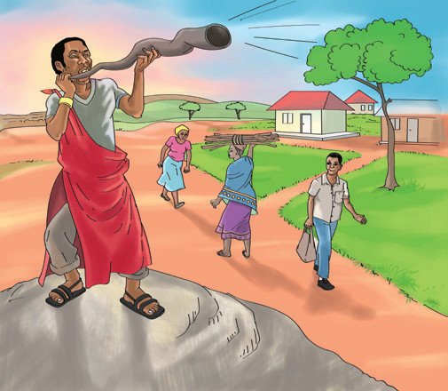
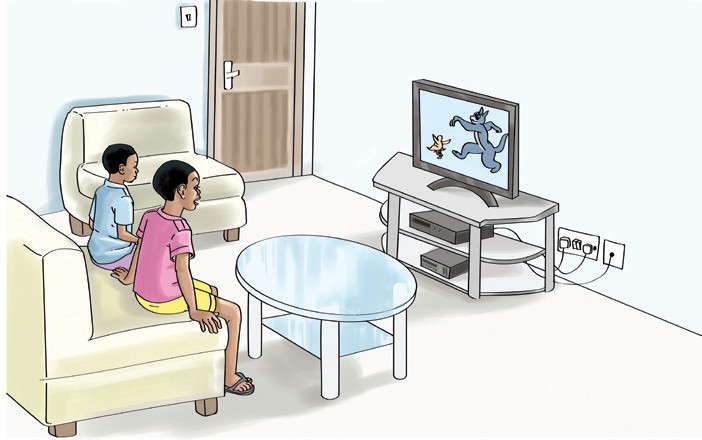

Sura ya Tano
Njia za mawasiliano
Katika sura hii, utajifunza kuhusu mawasiliano. Mawasiliano hufanyika kwa kutumia njia na vifaa mbalimbali vya Teknolojia ya Habari na Mawasiliano (TEHAMA). Pia, utajifunza kuhusu matumizi ya simu ya mkononi, redio, na runinga. Umahiri utakaoupata katika sura hii, utakuwezesha kutumia na kutunza simu, redio, na runinga.
Mawasiliano ni kitendo cha kupashana habari au kutoa taarifa kwa njia mbalimbali.
Njia za asili na za kisasa za mawasiliano
Chunguza Kielelezo namba 1, kisha soma maelezo yanayofuata.


Kielelezo namba 1 kinaonesha baadhi ya njia za mawasiliano. Baragumu, ngoma, na runinga ni njia za mawasiliano. Vilevile, kuwasiliana kwa simu na kusoma maandishi ya nuktanundu ni njia ya mawasiliano. Mawasiliano yanaweza kufanyika kwa njia ya ishara au simu. Mawasiliano ni kitendo cha kubadilishana habari kwa mazungumzo, maandishi au ishara.